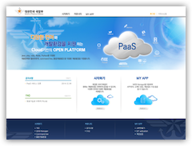

Time Line
2014
- Cloud PaaS Platform WebPortal 고도화
-
2014.03 ~ 현재
Server : Linux, Apache2, Tomcat7
Language : Java, Spring2.9, mybatis, Javascript, html, OpenShift API
DB : mysql, mongodb
Part : 개발
Role : 개발 PL
Order CP : NIPA
URL : https://openpaas.cloudsc.kr
Paas(Platform as a Service) 의 WebPortal 서비스, Application 생성 및 PaaS 모듈과 연동 및 RealTime User 등록 및 Admin, 자원 관리 고도화
- OpenShift EgovFrameWork3.0 Custom Cartridge
-
2014.07 ~ 2014.08
Server : Linux, OpenShift
Language : Ruby, ShellScript, OpenShift Cartridge v2.0
DB :
Part : 개발
Role : 개발 PL
Order CP : NIPA
Paas(Platform as a Service) 의 전자정부 프레임워크를 이용해 개발을 할 수 있도록 Cartridge 개발.
- OpenShift Cubrid9.2.10 Custom Cartridge
-
2014.08 ~ 2014.09

Server : Linux, OpenShift
Language : Ruby, ShellScript, OpenShift Cartridge v2.0
DB : Cubrid
Part : 개발
Role : 개발 PL
Order CP : NIPA
Paas(Platform as a Service) 의 Cubrid DB를 사용하여 개발을 할 수 있도록 Cartridge 개발.
- 국방부 MegaCenter PaaS Portal
-
2014.10 ~ 2014.12
Server : Linux, Apache2, Tomcat7,OpenShift
Language : Java, Spring3.1, Spring Mongo Data, jquery, html5, OpenShift API
DB : MongoDB
Part : 개발
Role : 개발 PL
Order CP : LG-CNS
국방부 MegaCenter에 Paas(Platform as a Service) 서비스의 WebPortal 개발
2013
- Cloud PaaS Platform WebPortal
-
2013.04 ~ 2013.06
Server : Linux, Apache2, Tomcat7
Language : Java, Spring2.9, mybatis, Javascript, html, OpenShift API
DB : mysql, mongodb
Part : 개발
Role : 개발 PL
Order CP : NIPA
URL : https://openpaas.cloudsc.kr
Paas(Platform as a Service) 의 WebPortal 서비스, Application 생성 및 PaaS 모듈과 연동
- 지오펜싱 기술과 사용자 라이프트랙킹 기반의 마케팅 시뮬레이션 클라우드 시스템
-
2013.06 ~ 2013.12

Server : Linux, Apache2, Tomcat7
Language : Java, Spring3.0, Spring mongo Data, Javascript, html5, GoogleMap API
DB : mongodb
Part : 개발
Role : 개발 PL
Order CP : 미래창조과학부 URL : http://210.122.3.201/visual-market/
Paas(Platform as a Service) 의 WebPortal 서비스, Application 생성 및 PaaS 모듈과 연동
2012
- KT olleh 인터넷 전화 서비스
-
2012.03 ~ 현재
Server : Linux, Apache2, Tomcat6
Language : Java, JSP, Javascript, html
DB : Oracle
Part : 개발 및 운영
Role : 개발 PL
Order CP : KTH
URL : http://ifone.olleh.com
olleh.com 내에 있는 인터넷 전화 서비스로 인터넷 전화 가입 고객의 편의를 위해 인터넷 전화번호 등록, 문자 발송 및 인터넷 팩스 가입자의 팩스 발송, 팩스 수, 주소록, 부가 서비스등의 서비스를 제공.
- KT 스마트홈패드( 스마트 홈닥터 )
-
2012.03 ~ 2013.09
Server : NT, Tomcat7
Language : Android, Java, JSP, spring, ibatis, Javascript, html
DB : MS-SQL
Part : 개발 및 운영
Role : 개발 PL
Order CP : KTH
KT 스마트 홈패드에 제공되는 앱으로 하이브리드앱이며 의료정보 및 가족의 건강 수치 등을 기록하고 확인하는 서비스.
- KT 스마트홈패드( 스마트 홈닥터 ) CMS
-
2012.03 ~ 2013.09
Server : NT, Tomcat7
Language : Android, Java, JSP, spring,ibatis,Javascript, html, Google Chart
DB : MS-SQL
Part : 개발
Role : 개발 PL
Order CP : KTH
KT 스마트 홈패드에 제공되는 앱인 스마트 홈닥터 서비스 접속 통계 및 사용량등을 확인하는 서비스.
2011
- U+ 통합 OSS PNI 건물 관리및 정비 System
-
2011.12 ~ 2012.02
Server : Unix, NT
Language : smallworld, magic
DB : Oracle, VMDS
Part : 개발 및 운영
Role : 팀원
Order CP : LG CNS
PNI 시스템에서 잘못 설계된 건물 및 아파트를 정비하기 위해 PNI 시스템에 plugin 형태로 개발 완료.
2009
- U+ OSS PNI System
-
2009.08 ~ 2011.11
Server : Unix, NT
Language : smallworld, magic
DB : Oracle, VMDS
Part : 개발 및 운영
Role : 팀원
Order CP : LG CNS
PNI(Physical Network Inventory) GE Digital Energy의 SmallWorld의 국내 시스템에 맞게 변경하여 개발 및 운영 통신 설비의 설계 및 설계 지도 통합 등의 작업이 이루어지는 서비스 입니다.
2008
- 통합 OSS Web-Gis System
-
2008.07 ~ 2009.07
Server : Unix, Jeus, WebToBe
Language : java, JSF, EJB, xml, javascript, html, magic
DB : Oracle, VMDS
Part : 개발
Role : 팀원
Order CP : LG CNS
데이콤과 파워콤의 통합으로 인한 Potis 시스템 고도화로 통합 OSS(TOSS) 시스템으로 개발을 시작하였음. 또한 SIAS 4.12 버전으로 업데이트 되면 JSF로 웹 UI가 만들어졌으며 서버단과의 연동을 EJB를 통해서 서비스 하는것으로 변경 되었습니다.
2006
- Potis Web-Gis System
-
2006.06 ~ 2008.06
Server : Unix, Jeus, WebToBe
Language : html, javascript, xml, xslt, magic
DB : Oracle, VMDS
Part : 개발 및 운영
Role : 팀원
Order CP : LG CNS
통신 설비를 Web-GIS 에서 확인 및 Potis 시스템에서 장비를 지도상에서 볼 수 있도록 편의를 제공하기 위한 서비스